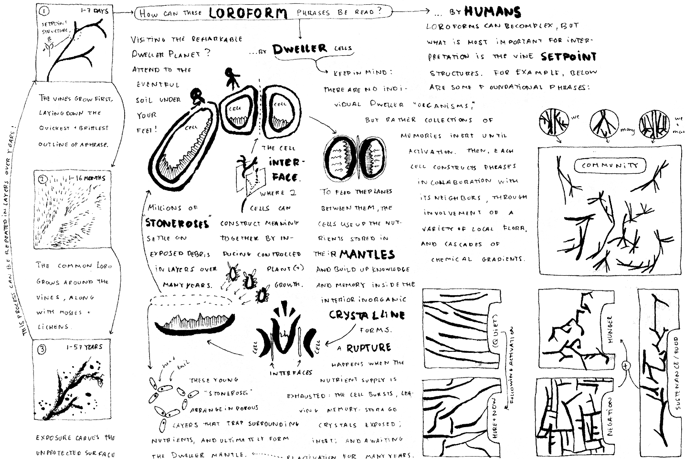

SF
Hi! I'm Kit, and I work with sci-fi and speculative fiction as a
technologist, teacher, and writer.
I use the term SF widely, through in my view one essential aspect of SF is some degree of worldbuilding, and commitment to the world that has been built - even if it is not explained, or explained through a confused or limited character.
As Samuel R. Delany writes: "You can put together more intersting combinations of words in science fiction than you can in any other kind of writing—and they actually mean something. You can say things like, “The door dilated” … and it implies both design and technology, as well as whole sets of social and experiential differences. When you say things like, “Her world exploded,” [you] reserve the margin for the words to mean that a planet belonging to a woman blew up."It is such
poetics of the literal that most draw me to SF, in literature and games alike, as well as in crafting performances with machine collaborators.
Teaching
Algorithmic Poetry of Fictional Robotics (
March 5 - April 2, 2024)
How have historical developments in robotics, speculative fiction, and algorithmic poetry influenced our understanding of the present and the future?
In collaboration with Mario Guzman, I teach speculative fiction at Berlin's School of Machines, Making, and Make-Believe since 2023. I also previously taught a course on worldbuilding in SF more generally.Performance
Creatures
Dismantling
Together with
Sage Jenson, who developed the interactive simulation based on the slime mold Physarum Polycephalum, I performed and exhibited visual art in
Dismantling (2019) @ Workshop on Forster, Berlin.

(Top) Nonlinear behaviour of the system allows a diversity of
structures to arise from the same underlying simulation mechanics
and parameterization. (Bottom) Two frames showing how the scribe’s input
deliberately induces an accumulation of energy, which then flows
in ways the scribe has no direct control over. This performance, and our approach to choreography with a complex speculative system, is described in our paper below:
We also contributed an invited chapter in the Future of Text edited volume (download here), "Biological Ink: Extending The Scribe Through Digital Simulation":
"...digital ink materiality has no counterpart in the realm of physical ink materiality. Digital ink allows the scribe to intentionally
shift agency between themselves and the simulation; and to engage with the simulated
system agency at a level of complexity and scale inaccessible in a physical handwriting
medium.
" (Jenson & Kuksenok, 2020)
Games
Dwell (2023) is a short collaborative storytelling game, where the end of the story is already known, but the way there must be decided through
turn-based gameplay.
Lost Mail (2018-2020) was a monthly mystery space-postage detritus puzzle, run in collaboration with
Cora Lee.
All materials are currently offline, while I develop an interactive web-based story based on this puzzle. However, as a sneak peak, here is a diagram of a constructed language using moss, lichen, and tiny creatures that some rocks use to speak to each other in that world:
